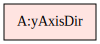
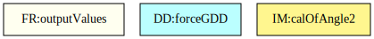
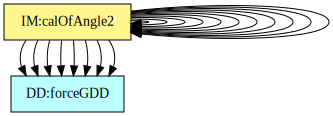
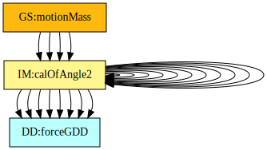

Software Requirements Specification for Double Pendulum
Dong Chen
Table of Contents
An outline of all sections included in this SRS is recorded here for easy reference.
- Table of Contents
- Reference Material
- Introduction
- General System Description
- Specific System Description
- Requirements
- Traceability Matrices and Graphs
- Values of Auxiliary Constants
- References
Reference Material
This section records information for easy reference.
Table of Units
The unit system used throughout is SI (Système International d’Unités). In addition to the basic units, several derived units are also used. For each unit, the Table of Units lists the symbol, a description, and the SI name.
| Symbol | Description | SI Name |
|---|---|---|
| \({\text{kg}}\) | mass | kilogram |
| \({\text{m}}\) | length | metre |
| \({\text{N}}\) | force | newton |
| \({\text{rad}}\) | angle | radian |
| \({\text{s}}\) | time | second |
Table of Units
Table of Symbols
The symbols used in this document are summarized in the Table of Symbols along with their units. Throughout the document, symbols in bold will represent vectors, and scalars otherwise. The symbols are listed in alphabetical order. For vector quantities, the units shown are for each component of the vector.
| Symbol | Description | Units |
|---|---|---|
| \({a_{\text{x}1}}\) | Horizontal acceleration of the first object | \(\frac{\text{m}}{\text{s}^{2}}\) |
| \({a_{\text{x}2}}\) | Horizontal acceleration of the second object | \(\frac{\text{m}}{\text{s}^{2}}\) |
| \({a_{\text{y}1}}\) | Vertical acceleration of the first object | \(\frac{\text{m}}{\text{s}^{2}}\) |
| \({a_{\text{y}2}}\) | Vertical acceleration of the second object | \(\frac{\text{m}}{\text{s}^{2}}\) |
| \(\boldsymbol{a}\text{(}t\text{)}\) | Acceleration | \(\frac{\text{m}}{\text{s}^{2}}\) |
| \(\boldsymbol{F}\) | Force | \({\text{N}}\) |
| \(g\) | Magnitude of gravitational acceleration | \(\frac{\text{m}}{\text{s}^{2}}\) |
| \(\boldsymbol{g}\) | Gravitational acceleration | \(\frac{\text{m}}{\text{s}^{2}}\) |
| \(\boldsymbol{\hat{i}}\) | Unit vector | – |
| \({L_{1}}\) | Length of the first rod | \({\text{m}}\) |
| \({L_{2}}\) | Length of the second rod | \({\text{m}}\) |
| \(m\) | Mass | \({\text{kg}}\) |
| \({m_{1}}\) | Mass of the first object | \({\text{kg}}\) |
| \({m_{2}}\) | Mass of the second object | \({\text{kg}}\) |
| \({p_{\text{x}1}}\) | Horizontal position of the first object | \({\text{m}}\) |
| \({p_{\text{x}2}}\) | Horizontal position of the second object | \({\text{m}}\) |
| \({p_{\text{y}1}}\) | Vertical position of the first object | \({\text{m}}\) |
| \({p_{\text{y}2}}\) | Vertical position of the second object | \({\text{m}}\) |
| \(\boldsymbol{p}\text{(}t\text{)}\) | Position | \({\text{m}}\) |
| \(\boldsymbol{T}\) | Tension | \({\text{N}}\) |
| \({\boldsymbol{T}_{1}}\) | Tension of the first object | \({\text{N}}\) |
| \({\boldsymbol{T}_{2}}\) | Tension of the second object | \({\text{N}}\) |
| \(t\) | Time | \({\text{s}}\) |
| \(\text{theta}\) | Dependent variables | \({\text{rad}}\) |
| \({v_{\text{x}1}}\) | Horizontal velocity of the first object | \(\frac{\text{m}}{\text{s}}\) |
| \({v_{\text{x}2}}\) | Horizontal velocity of the second object | \(\frac{\text{m}}{\text{s}}\) |
| \({v_{\text{y}1}}\) | Vertical velocity of the first object | \(\frac{\text{m}}{\text{s}}\) |
| \({v_{\text{y}2}}\) | Vertical velocity of the second object | \(\frac{\text{m}}{\text{s}}\) |
| \(\boldsymbol{v}\text{(}t\text{)}\) | Velocity | \(\frac{\text{m}}{\text{s}}\) |
| \({w_{1}}\) | Angular velocity of the first object | \(\frac{\text{rad}}{\text{s}}\) |
| \({w_{2}}\) | Angular velocity of the second object | \(\frac{\text{rad}}{\text{s}}\) |
| \({α_{1}}\) | Angular acceleration of the first object | \(\frac{\text{rad}}{\text{s}^{2}}\) |
| \({α_{2}}\) | Angular acceleration of the second object | \(\frac{\text{rad}}{\text{s}^{2}}\) |
| \({θ_{1}}\) | Angle of the first rod | \({\text{rad}}\) |
| \({θ_{2}}\) | Angle of the second rod | \({\text{rad}}\) |
| \(π\) | Ratio of circumference to diameter for any circle | – |
Table of Symbols
Abbreviations and Acronyms
| Abbreviation | Full Form |
|---|---|
| 2D | Two-Dimensional |
| A | Assumption |
| DD | Data Definition |
| DblPend | Double Pendulum |
| GD | General Definition |
| GS | Goal Statement |
| IM | Instance Model |
| PS | Physical System Description |
| R | Requirement |
| RefBy | Referenced by |
| Refname | Reference Name |
| SRS | Software Requirements Specification |
| TM | Theoretical Model |
| Uncert. | Typical Uncertainty |
Abbreviations and Acronyms
Introduction
A pendulum consists of mass attached to the end of a rod and its moving curve is highly sensitive to initial conditions. Therefore, it is useful to have a program to simulate the motion of the pendulum to exhibit its chaotic characteristics. The document describes the program called Double Pendulum , which is based on the original, manually created version of Double Pendulum.
The following section provides an overview of the Software Requirements Specification (SRS) for Double Pendulum. This section explains the purpose of this document, the scope of the requirements, the characteristics of the intended reader, and the organization of the document.
Purpose of Document
The primary purpose of this document is to record the requirements of DblPend. Goals, assumptions, theoretical models, definitions, and other model derivation information are specified, allowing the reader to fully understand and verify the purpose and scientific basis of DblPend. With the exception of system constraints, this SRS will remain abstract, describing what problem is being solved, but not how to solve it.
This document will be used as a starting point for subsequent development phases, including writing the design specification and the software verification and validation plan. The design document will show how the requirements are to be realized, including decisions on the numerical algorithms and programming environment. The verification and validation plan will show the steps that will be used to increase confidence in the software documentation and the implementation. Although the SRS fits in a series of documents that follow the so-called waterfall model, the actual development process is not constrained in any way. Even when the waterfall model is not followed, as Parnas and Clements point out parnasClements1986, the most logical way to present the documentation is still to “fake” a rational design process.
Scope of Requirements
The scope of the requirements includes the analysis of a two-dimensional (2D) pendulum motion problem with various initial conditions.
Characteristics of Intended Reader
Reviewers of this documentation should have an understanding of undergraduate level 2 physics, undergraduate level 1 calculus, and ordinary differential equations. The users of DblPend can have a lower level of expertise, as explained in Sec:User Characteristics.
Organization of Document
The organization of this document follows the template for an SRS for scientific computing software proposed by koothoor2013, smithLai2005, smithEtAl2007, and smithKoothoor2016. The presentation follows the standard pattern of presenting goals, theories, definitions, and assumptions. For readers that would like a more bottom up approach, they can start reading the instance models and trace back to find any additional information they require.
The goal statements are refined to the theoretical models and the theoretical models to the instance models.
General System Description
This section provides general information about the system. It identifies the interfaces between the system and its environment, describes the user characteristics, and lists the system constraints.
System Context
Fig:sysCtxDiag shows the system context. A circle represents an entity external to the software, the user in this case. A rectangle represents the software system itself (DblPend). Arrows are used to show the data flow between the system and its environment.
Figure: System Context
The interaction between the product and the user is through an application programming interface. The responsibilities of the user and the system are as follows:
- User Responsibilities
- Provide initial conditions of the physical state of the motion and the input data related to the Double Pendulum, ensuring no errors in the data entry.
- Ensure that consistent units are used for input variables.
- Ensure required software assumptions are appropriate for any particular problem input to the software.
- DblPend Responsibilities
- Detect data type mismatch, such as a string of characters input instead of a floating point number.
- Determine if the inputs satisfy the required physical and software constraints.
- Calculate the required outputs.
- Generate the required graphs.
User Characteristics
The end user of DblPend should have an understanding of high school physics, high school calculus and ordinary differential equations.
System Constraints
There are no system constraints.
Specific System Description
This section first presents the problem description, which gives a high-level view of the problem to be solved. This is followed by the solution characteristics specification, which presents the assumptions, theories, and definitions that are used.
Problem Description
A system is needed to predict the motion of a double pendulum.
Terminology and Definitions
This subsection provides a list of terms that are used in the subsequent sections and their meaning, with the purpose of reducing ambiguity and making it easier to correctly understand the requirements.
- Gravity: The force that attracts one physical body with mass to another.
- Cartesian coordinate system: A coordinate system that specifies each point uniquely in a plane by a set of numerical coordinates, which are the signed distances to the point from two fixed perpendicular oriented lines, measured in the same unit of length (from cartesianWiki).
Physical System Description
The physical system of DblPend, as shown in Fig:dblpend, includes the following elements:
PS1: The first rod (with length of the first rod \({L_{1}}\)).
PS2: The second rod (with length of the second rod \({L_{2}}\)).
PS3: The first object.
PS4: The second object.
Figure: The physical system
Goal Statements
Given the masses, length of the rods, initial angle of the masses and the gravitational constant, the goal statement is:
motionMass: Calculate the motion of the masses.
Solution Characteristics Specification
The instance models that govern DblPend are presented in the Instance Model Section. The information to understand the meaning of the instance models and their derivation is also presented, so that the instance models can be verified.
Assumptions
This section simplifies the original problem and helps in developing the theoretical models by filling in the missing information for the physical system. The assumptions refine the scope by providing more detail.
twoDMotion: The pendulum motion is two-dimensional (2D).
cartSys: A Cartesian coordinate system is used.
cartSysR: The Cartesian coordinate system is right-handed where positive \(x\)-axis and \(y\)-axis point right up.
yAxisDir: The direction of the \(y\)-axis is directed opposite to gravity.
Theoretical Models
This section focuses on the general equations and laws that DblPend is based on.
| Refname | TM:acceleration |
|---|---|
| Label | Acceleration |
| Equation | \[\boldsymbol{a}\text{(}t\text{)}=\frac{\,d\boldsymbol{v}\text{(}t\text{)}}{\,dt}\] |
| Description |
|
| Source | accelerationWiki |
| RefBy |
| Refname | TM:velocity |
|---|---|
| Label | Velocity |
| Equation | \[\boldsymbol{v}\text{(}t\text{)}=\frac{\,d\boldsymbol{p}\text{(}t\text{)}}{\,dt}\] |
| Description |
|
| Source | velocityWiki |
| RefBy |
| Refname | TM:NewtonSecLawMot |
|---|---|
| Label | Newton’s second law of motion |
| Equation | \[\boldsymbol{F}=m\,\boldsymbol{a}\text{(}t\text{)}\] |
| Description |
|
| Notes |
|
| Source | – |
| RefBy |
General Definitions
This section collects the laws and equations that will be used to build the instance models.
| Refname | GD:velocityX1 |
|---|---|
| Label | The \(x\)-component of velocity of the first object |
| Units | \(\frac{\text{m}}{\text{s}}\) |
| Equation | \[{v_{\text{x}1}}={w_{1}}\,{L_{1}}\,\cos\left({θ_{1}}\right)\] |
| Description |
|
| Source | – |
| RefBy |
Detailed derivation of the \(x\)-component of velocity:
At a given point in time, velocity is defined in DD:positionGDD
\[\boldsymbol{v}\text{(}t\text{)}=\frac{\,d\boldsymbol{p}\text{(}t\text{)}}{\,dt}\]
We also know the horizontal position that is defined in DD:positionXDD1
\[{p_{\text{x}1}}={L_{1}}\,\sin\left({θ_{1}}\right)\]
Applying this,
\[{v_{\text{x}1}}=\frac{\,d{L_{1}}\,\sin\left({θ_{1}}\right)}{\,dt}\]
\({L_{1}}\) is constant with respect to time, so
\[{v_{\text{x}1}}={L_{1}}\,\frac{\,d\sin\left({θ_{1}}\right)}{\,dt}\]
Therefore, using the chain rule,
\[{v_{\text{x}1}}={w_{1}}\,{L_{1}}\,\cos\left({θ_{1}}\right)\]
| Refname | GD:velocityY1 |
|---|---|
| Label | The \(y\)-component of velocity of the first object |
| Units | \(\frac{\text{m}}{\text{s}}\) |
| Equation | \[{v_{\text{y}1}}={w_{1}}\,{L_{1}}\,\sin\left({θ_{1}}\right)\] |
| Description |
|
| Source | – |
| RefBy |
Detailed derivation of the \(y\)-component of velocity:
At a given point in time, velocity is defined in DD:positionGDD
\[\boldsymbol{v}\text{(}t\text{)}=\frac{\,d\boldsymbol{p}\text{(}t\text{)}}{\,dt}\]
We also know the vertical position that is defined in DD:positionYDD1
\[{p_{\text{y}1}}=-{L_{1}}\,\cos\left({θ_{1}}\right)\]
Applying this,
\[{v_{\text{y}1}}=-\left(\frac{\,d{L_{1}}\,\cos\left({θ_{1}}\right)}{\,dt}\right)\]
\({L_{1}}\) is constant with respect to time, so
\[{v_{\text{y}1}}=-{L_{1}}\,\frac{\,d\cos\left({θ_{1}}\right)}{\,dt}\]
Therefore, using the chain rule,
\[{v_{\text{y}1}}={w_{1}}\,{L_{1}}\,\sin\left({θ_{1}}\right)\]
| Refname | GD:velocityX2 |
|---|---|
| Label | The \(x\)-component of velocity of the second object |
| Units | \(\frac{\text{m}}{\text{s}}\) |
| Equation | \[{v_{\text{x}2}}={v_{\text{x}1}}+{w_{2}}\,{L_{2}}\,\cos\left({θ_{2}}\right)\] |
| Description |
|
| Source | – |
| RefBy |
Detailed derivation of the \(x\)-component of velocity:
At a given point in time, velocity is defined in DD:positionGDD
\[\boldsymbol{v}\text{(}t\text{)}=\frac{\,d\boldsymbol{p}\text{(}t\text{)}}{\,dt}\]
We also know the horizontal position that is defined in DD:positionXDD2
\[{p_{\text{x}2}}={p_{\text{x}1}}+{L_{2}}\,\sin\left({θ_{2}}\right)\]
Applying this,
\[{v_{\text{x}2}}=\frac{\,d{p_{\text{x}1}}+{L_{2}}\,\sin\left({θ_{2}}\right)}{\,dt}\]
\({L_{1}}\) is constant with respect to time, so
\[{v_{\text{x}2}}={v_{\text{x}1}}+{w_{2}}\,{L_{2}}\,\cos\left({θ_{2}}\right)\]
| Refname | GD:velocityY2 |
|---|---|
| Label | The \(y\)-component of velocity of the second object |
| Units | \(\frac{\text{m}}{\text{s}}\) |
| Equation | \[{v_{\text{y}2}}={v_{\text{y}1}}+{w_{2}}\,{L_{2}}\,\sin\left({θ_{2}}\right)\] |
| Description |
|
| Source | – |
| RefBy |
Detailed derivation of the \(y\)-component of velocity:
At a given point in time, velocity is defined in DD:positionGDD
\[\boldsymbol{v}\text{(}t\text{)}=\frac{\,d\boldsymbol{p}\text{(}t\text{)}}{\,dt}\]
We also know the vertical position that is defined in DD:positionYDD2
\[{p_{\text{y}2}}={p_{\text{y}1}}-{L_{2}}\,\cos\left({θ_{2}}\right)\]
Applying this,
\[{v_{\text{y}2}}=-\left(\frac{\,d{p_{\text{y}1}}-{L_{2}}\,\cos\left({θ_{2}}\right)}{\,dt}\right)\]
Therefore, using the chain rule,
\[{v_{\text{y}2}}={v_{\text{y}1}}+{w_{2}}\,{L_{2}}\,\sin\left({θ_{2}}\right)\]
| Refname | GD:accelerationX1 |
|---|---|
| Label | The \(x\)-component of acceleration of the first object |
| Units | \(\frac{\text{m}}{\text{s}^{2}}\) |
| Equation | \[{a_{\text{x}1}}=-{w_{1}}^{2}\,{L_{1}}\,\sin\left({θ_{1}}\right)+{α_{1}}\,{L_{1}}\,\cos\left({θ_{1}}\right)\] |
| Description |
|
| Source | – |
| RefBy | IM:calOfAngle2 |
Detailed derivation of the \(x\)-component of acceleration:
Our acceleration is:
\[\boldsymbol{a}\text{(}t\text{)}=\frac{\,d\boldsymbol{v}\text{(}t\text{)}}{\,dt}\]
Earlier, we found the horizontal velocity to be
\[{v_{\text{x}1}}={w_{1}}\,{L_{1}}\,\cos\left({θ_{1}}\right)\]
Applying this to our equation for acceleration
\[{a_{\text{x}1}}=\frac{\,d{w_{1}}\,{L_{1}}\,\cos\left({θ_{1}}\right)}{\,dt}\]
By the product and chain rules, we find
\[{a_{\text{x}1}}=\frac{\,d{w_{1}}}{\,dt}\,{L_{1}}\,\cos\left({θ_{1}}\right)-{w_{1}}\,{L_{1}}\,\sin\left({θ_{1}}\right)\,\frac{\,d{θ_{1}}}{\,dt}\]
Simplifying,
\[{a_{\text{x}1}}=-{w_{1}}^{2}\,{L_{1}}\,\sin\left({θ_{1}}\right)+{α_{1}}\,{L_{1}}\,\cos\left({θ_{1}}\right)\]
| Refname | GD:accelerationY1 |
|---|---|
| Label | The \(y\)-component of acceleration of the first object |
| Units | \(\frac{\text{m}}{\text{s}^{2}}\) |
| Equation | \[{a_{\text{y}1}}={w_{1}}^{2}\,{L_{1}}\,\cos\left({θ_{1}}\right)+{α_{1}}\,{L_{1}}\,\sin\left({θ_{1}}\right)\] |
| Description |
|
| Source | – |
| RefBy | IM:calOfAngle2 |
Detailed derivation of the \(y\)-component of acceleration:
Our acceleration is:
\[\boldsymbol{a}\text{(}t\text{)}=\frac{\,d\boldsymbol{v}\text{(}t\text{)}}{\,dt}\]
Earlier, we found the vertical velocity to be
\[{v_{\text{y}1}}={w_{1}}\,{L_{1}}\,\sin\left({θ_{1}}\right)\]
Applying this to our equation for acceleration
\[{a_{\text{y}1}}=\frac{\,d{w_{1}}\,{L_{1}}\,\sin\left({θ_{1}}\right)}{\,dt}\]
By the product and chain rules, we find
\[{a_{\text{y}1}}=\frac{\,d{w_{1}}}{\,dt}\,{L_{1}}\,\sin\left({θ_{1}}\right)+{w_{1}}\,{L_{1}}\,\cos\left({θ_{1}}\right)\,\frac{\,d{θ_{1}}}{\,dt}\]
Simplifying,
\[{a_{\text{y}1}}={w_{1}}^{2}\,{L_{1}}\,\cos\left({θ_{1}}\right)+{α_{1}}\,{L_{1}}\,\sin\left({θ_{1}}\right)\]
| Refname | GD:accelerationX2 |
|---|---|
| Label | The \(x\)-component of acceleration of the second object |
| Units | \(\frac{\text{m}}{\text{s}^{2}}\) |
| Equation | \[{a_{\text{x}2}}={a_{\text{x}1}}-{w_{2}}^{2}\,{L_{2}}\,\sin\left({θ_{2}}\right)+{α_{2}}\,{L_{2}}\,\cos\left({θ_{2}}\right)\] |
| Description |
|
| Source | – |
| RefBy | IM:calOfAngle2 |
Detailed derivation of the \(x\)-component of acceleration:
Our acceleration is:
\[\boldsymbol{a}\text{(}t\text{)}=\frac{\,d\boldsymbol{v}\text{(}t\text{)}}{\,dt}\]
Earlier, we found the horizontal velocity to be
\[{v_{\text{x}2}}={v_{\text{x}1}}+{w_{2}}\,{L_{2}}\,\cos\left({θ_{2}}\right)\]
Applying this to our equation for acceleration
\[{a_{\text{x}2}}=\frac{\,d{v_{\text{x}1}}+{w_{2}}\,{L_{2}}\,\cos\left({θ_{2}}\right)}{\,dt}\]
By the product and chain rules, we find
\[{a_{\text{x}2}}={a_{\text{x}1}}-{w_{2}}^{2}\,{L_{2}}\,\sin\left({θ_{2}}\right)+{α_{2}}\,{L_{2}}\,\cos\left({θ_{2}}\right)\]
| Refname | GD:accelerationY2 |
|---|---|
| Label | The \(y\)-component of acceleration of the second object |
| Units | \(\frac{\text{m}}{\text{s}^{2}}\) |
| Equation | \[{a_{\text{y}2}}={a_{\text{y}1}}+{w_{2}}^{2}\,{L_{2}}\,\cos\left({θ_{2}}\right)+{α_{2}}\,{L_{2}}\,\sin\left({θ_{2}}\right)\] |
| Description |
|
| Source | – |
| RefBy | IM:calOfAngle2 |
Detailed derivation of the \(y\)-component of acceleration:
Our acceleration is:
\[\boldsymbol{a}\text{(}t\text{)}=\frac{\,d\boldsymbol{v}\text{(}t\text{)}}{\,dt}\]
Earlier, we found the horizontal velocity to be
\[{v_{\text{y}2}}={v_{\text{y}1}}+{w_{2}}\,{L_{2}}\,\sin\left({θ_{2}}\right)\]
Applying this to our equation for acceleration
\[{a_{\text{y}2}}=\frac{\,d{v_{\text{y}1}}+{w_{2}}\,{L_{2}}\,\sin\left({θ_{2}}\right)}{\,dt}\]
By the product and chain rules, we find
\[{a_{\text{y}2}}={a_{\text{y}1}}+{w_{2}}^{2}\,{L_{2}}\,\cos\left({θ_{2}}\right)+{α_{2}}\,{L_{2}}\,\sin\left({θ_{2}}\right)\]
| Refname | GD:xForce1 |
|---|---|
| Label | Horizontal force on the first object |
| Units | \({\text{N}}\) |
| Equation | \[\boldsymbol{F}=m \boldsymbol{a}\text{(}t\text{)}=-{\boldsymbol{T}_{1}}\,\sin\left({θ_{1}}\right)+{\boldsymbol{T}_{2}}\,\sin\left({θ_{2}}\right)\] |
| Description |
|
| Source | – |
| RefBy | IM:calOfAngle2 |
Detailed derivation of force on the first object:
\[\boldsymbol{F}=m \boldsymbol{a}\text{(}t\text{)}=-{\boldsymbol{T}_{1}}\,\sin\left({θ_{1}}\right)+{\boldsymbol{T}_{2}}\,\sin\left({θ_{2}}\right)\]
| Refname | GD:yForce1 |
|---|---|
| Label | Vertical force on the first object |
| Units | \({\text{N}}\) |
| Equation | \[\boldsymbol{F}=m \boldsymbol{a}\text{(}t\text{)}={\boldsymbol{T}_{1}}\,\cos\left({θ_{1}}\right)-{\boldsymbol{T}_{2}}\,\cos\left({θ_{2}}\right)-{m_{1}}\,\boldsymbol{g}\] |
| Description |
|
| Source | – |
| RefBy | IM:calOfAngle2 |
Detailed derivation of force on the first object:
\[\boldsymbol{F}=m \boldsymbol{a}\text{(}t\text{)}={\boldsymbol{T}_{1}}\,\cos\left({θ_{1}}\right)-{\boldsymbol{T}_{2}}\,\cos\left({θ_{2}}\right)-{m_{1}}\,\boldsymbol{g}\]
| Refname | GD:xForce2 |
|---|---|
| Label | Horizontal force on the second object |
| Units | \({\text{N}}\) |
| Equation | \[\boldsymbol{F}=m \boldsymbol{a}\text{(}t\text{)}=-{\boldsymbol{T}_{2}}\,\sin\left({θ_{2}}\right)\] |
| Description |
|
| Source | – |
| RefBy | IM:calOfAngle2 |
Detailed derivation of force on the second object:
\[\boldsymbol{F}=m \boldsymbol{a}\text{(}t\text{)}=-{\boldsymbol{T}_{2}}\,\sin\left({θ_{2}}\right)\]
| Refname | GD:yForce2 |
|---|---|
| Label | Vertical force on the second object |
| Units | \({\text{N}}\) |
| Equation | \[\boldsymbol{F}=m \boldsymbol{a}\text{(}t\text{)}={\boldsymbol{T}_{2}}\,\cos\left({θ_{2}}\right)-{m_{2}}\,\boldsymbol{g}\] |
| Description |
|
| Source | – |
| RefBy | IM:calOfAngle2 |
Detailed derivation of force on the second object:
\[\boldsymbol{F}=m \boldsymbol{a}\text{(}t\text{)}={\boldsymbol{T}_{2}}\,\cos\left({θ_{2}}\right)-{m_{2}}\,\boldsymbol{g}\]
Data Definitions
This section collects and defines all the data needed to build the instance models.
| Refname | DD:positionGDD |
|---|---|
| Label | Velocity |
| Symbol | \(\boldsymbol{v}\text{(}t\text{)}\) |
| Units | \(\frac{\text{m}}{\text{s}}\) |
| Equation | \[\boldsymbol{v}\text{(}t\text{)}=\frac{\,d\boldsymbol{p}\text{(}t\text{)}}{\,dt}\] |
| Description |
|
| Source | – |
| RefBy | GD:velocityY2, GD:velocityY1, GD:velocityX2, and GD:velocityX1 |
| Refname | DD:positionXDD1 |
|---|---|
| Label | Horizontal position of the first object |
| Symbol | \({p_{\text{x}1}}\) |
| Units | \({\text{m}}\) |
| Equation | \[{p_{\text{x}1}}={L_{1}}\,\sin\left({θ_{1}}\right)\] |
| Description |
|
| Notes |
|
| Source | – |
| RefBy | GD:velocityX1 |
| Refname | DD:positionYDD1 |
|---|---|
| Label | Vertical position of the first object |
| Symbol | \({p_{\text{y}1}}\) |
| Units | \({\text{m}}\) |
| Equation | \[{p_{\text{y}1}}=-{L_{1}}\,\cos\left({θ_{1}}\right)\] |
| Description |
|
| Notes |
|
| Source | – |
| RefBy | GD:velocityY1 |
| Refname | DD:positionXDD2 |
|---|---|
| Label | Horizontal position of the second object |
| Symbol | \({p_{\text{x}2}}\) |
| Units | \({\text{m}}\) |
| Equation | \[{p_{\text{x}2}}={p_{\text{x}1}}+{L_{2}}\,\sin\left({θ_{2}}\right)\] |
| Description |
|
| Notes |
|
| Source | – |
| RefBy | GD:velocityX2 |
| Refname | DD:positionYDD2 |
|---|---|
| Label | Vertical position of the second object |
| Symbol | \({p_{\text{y}2}}\) |
| Units | \({\text{m}}\) |
| Equation | \[{p_{\text{y}2}}={p_{\text{y}1}}-{L_{2}}\,\cos\left({θ_{2}}\right)\] |
| Description |
|
| Notes |
|
| Source | – |
| RefBy | GD:velocityY2 |
| Refname | DD:accelerationGDD |
|---|---|
| Label | Acceleration |
| Symbol | \(\boldsymbol{a}\text{(}t\text{)}\) |
| Units | \(\frac{\text{m}}{\text{s}^{2}}\) |
| Equation | \[\boldsymbol{a}\text{(}t\text{)}=\frac{\,d\boldsymbol{v}\text{(}t\text{)}}{\,dt}\] |
| Description |
|
| Source | – |
| RefBy |
| Refname | DD:forceGDD |
|---|---|
| Label | Force |
| Symbol | \(\boldsymbol{F}\) |
| Units | \({\text{N}}\) |
| Equation | \[\boldsymbol{F}=m \boldsymbol{a}\text{(}t\text{)}\] |
| Description |
|
| Source | – |
| RefBy |
Instance Models
This section transforms the problem defined in the problem description into one which is expressed in mathematical terms. It uses concrete symbols defined in the data definitions to replace the abstract symbols in the models identified in theoretical models and general definitions.
| Refname | IM:calOfAngle1 |
|---|---|
| Label | Calculation of angle of first rod |
| Input | \({L_{1}}\), \({L_{2}}\), \({m_{1}}\), \({m_{2}}\), \({θ_{1}}\), \({θ_{2}}\) |
| Output | \({θ_{1}}\) |
| Input Constraints | \[{L_{1}}\gt{}0\]\[{L_{2}}\gt{}0\]\[{m_{1}}\gt{}0\]\[{m_{2}}\gt{}0\] |
| Output Constraints | |
| Equation | \[{α_{1}}\left({θ_{1}},{θ_{2}},{w_{1}},{w_{2}}\right)=\frac{-g\,\left(2\,{m_{1}}+{m_{2}}\right)\,\sin\left({θ_{1}}\right)-{m_{2}}\,g\,\sin\left({θ_{1}}-2\,{θ_{2}}\right)-2\,\sin\left({θ_{1}}-{θ_{2}}\right)\,{m_{2}}\,\left({w_{2}}^{2}\,{L_{2}}+{w_{1}}^{2}\,{L_{1}}\,\cos\left({θ_{1}}-{θ_{2}}\right)\right)}{{L_{1}}\,\left(2\,{m_{1}}+{m_{2}}-{m_{2}}\,\cos\left(2\,{θ_{1}}-2\,{θ_{2}}\right)\right)}\] |
| Description |
|
| Notes |
|
| Source | – |
| RefBy | IM:calOfAngle2, FR:Output-Values, and FR:Calculate-Angle-Of-Rod |
| Refname | IM:calOfAngle2 |
|---|---|
| Label | Calculation of angle of second rod |
| Input | \({L_{1}}\), \({L_{2}}\), \({m_{1}}\), \({m_{2}}\), \({θ_{1}}\), \({θ_{2}}\) |
| Output | \({θ_{2}}\) |
| Input Constraints | \[{L_{1}}\gt{}0\]\[{L_{2}}\gt{}0\]\[{m_{1}}\gt{}0\]\[{m_{2}}\gt{}0\] |
| Output Constraints | |
| Equation | \[{α_{2}}\left({θ_{1}},{θ_{2}},{w_{1}},{w_{2}}\right)=\frac{2\,\sin\left({θ_{1}}-{θ_{2}}\right)\,\left({w_{1}}^{2}\,{L_{1}}\,\left({m_{1}}+{m_{2}}\right)+g\,\left({m_{1}}+{m_{2}}\right)\,\cos\left({θ_{1}}\right)+{w_{2}}^{2}\,{L_{2}}\,{m_{2}}\,\cos\left({θ_{1}}-{θ_{2}}\right)\right)}{{L_{2}}\,\left(2\,{m_{1}}+{m_{2}}-{m_{2}}\,\cos\left(2\,{θ_{1}}-2\,{θ_{2}}\right)\right)}\] |
| Description |
|
| Notes |
|
| Source | – |
| RefBy | IM:calOfAngle2, IM:calOfAngle1, FR:Output-Values, and FR:Calculate-Angle-Of-Rod |
Detailed derivation of angle of the second rod:
By solving equations GD:xForce2 and GD:yForce2 for \({\boldsymbol{T}_{2}}\,\sin\left({θ_{2}}\right)\) and \({\boldsymbol{T}_{2}}\,\cos\left({θ_{2}}\right)\) and then substituting into equation GD:xForce1 and GD:yForce1 , we can get equations 1 and 2:
\[{m_{1}}\,{a_{\text{x}1}}=-{\boldsymbol{T}_{1}}\,\sin\left({θ_{1}}\right)-{m_{2}}\,{a_{\text{x}2}}\]
\[{m_{1}}\,{a_{\text{y}1}}={\boldsymbol{T}_{1}}\,\cos\left({θ_{1}}\right)-{m_{2}}\,{a_{\text{y}2}}-{m_{2}}\,g-{m_{1}}\,g\]
Multiply the equation 1 by \(\cos\left({θ_{1}}\right)\) and the equation 2 by \(\sin\left({θ_{1}}\right)\) and rearrange to get:
\[{\boldsymbol{T}_{1}}\,\sin\left({θ_{1}}\right)\,\cos\left({θ_{1}}\right)=-\cos\left({θ_{1}}\right)\,\left({m_{1}}\,{a_{\text{x}1}}+{m_{2}}\,{a_{\text{x}2}}\right)\]
\[{\boldsymbol{T}_{1}}\,\sin\left({θ_{1}}\right)\,\cos\left({θ_{1}}\right)=\sin\left({θ_{1}}\right)\,\left({m_{1}}\,{a_{\text{y}1}}+{m_{2}}\,{a_{\text{y}2}}+{m_{2}}\,g+{m_{1}}\,g\right)\]
This leads to the equation 3
\[\sin\left({θ_{1}}\right)\,\left({m_{1}}\,{a_{\text{y}1}}+{m_{2}}\,{a_{\text{y}2}}+{m_{2}}\,g+{m_{1}}\,g\right)=-\cos\left({θ_{1}}\right)\,\left({m_{1}}\,{a_{\text{x}1}}+{m_{2}}\,{a_{\text{x}2}}\right)\]
Next, multiply equation GD:xForce2 by \(\cos\left({θ_{2}}\right)\) and equation GD:yForce2 by \(\sin\left({θ_{2}}\right)\) and rearrange to get:
\[{\boldsymbol{T}_{2}}\,\sin\left({θ_{2}}\right)\,\cos\left({θ_{2}}\right)=-\cos\left({θ_{2}}\right)\,{m_{2}}\,{a_{\text{x}2}}\]
\[{\boldsymbol{T}_{1}}\,\sin\left({θ_{2}}\right)\,\cos\left({θ_{2}}\right)=\sin\left({θ_{2}}\right)\,\left({m_{2}}\,{a_{\text{y}2}}+{m_{2}}\,g\right)\]
which leads to equation 4
\[\sin\left({θ_{2}}\right)\,\left({m_{2}}\,{a_{\text{y}2}}+{m_{2}}\,g\right)=-\cos\left({θ_{2}}\right)\,{m_{2}}\,{a_{\text{x}2}}\]
By giving equations GD:accelerationX1 and GD:accelerationX2 and GD:accelerationY1 and GD:accelerationY2 plus additional two equations, 3 and 4, we can get IM:calOfAngle1 and IM:calOfAngle2 via a computer algebra program:
Data Constraints
The Data Constraints Table shows the data constraints on the input variables. The column for physical constraints gives the physical limitations on the range of values that can be taken by the variable. The uncertainty column provides an estimate of the confidence with which the physical quantities can be measured. This information would be part of the input if one were performing an uncertainty quantification exercise. The constraints are conservative to give the user of the model the flexibility to experiment with unusual situations. The column of typical values is intended to provide a feel for a common scenario.
| Var | Physical Constraints | Typical Value | Uncert. |
|---|---|---|---|
| \({L_{1}}\) | \({L_{1}}\gt{}0\) | \(1.0\) \({\text{m}}\) | 10\(\%\) |
| \({L_{2}}\) | \({L_{2}}\gt{}0\) | \(1.0\) \({\text{m}}\) | 10\(\%\) |
| \({m_{1}}\) | \({m_{1}}\gt{}0\) | \(0.5\) \({\text{kg}}\) | 10\(\%\) |
| \({m_{2}}\) | \({m_{2}}\gt{}0\) | \(0.5\) \({\text{kg}}\) | 10\(\%\) |
Input Data Constraints
Properties of a Correct Solution
The Data Constraints Table shows the data constraints on the output variables. The column for physical constraints gives the physical limitations on the range of values that can be taken by the variable.
| Var | Physical Constraints |
|---|---|
| \({θ_{1}}\) | \({θ_{1}}\gt{}0\) |
| \({θ_{2}}\) | \({θ_{2}}\gt{}0\) |
Output Data Constraints
Requirements
This section provides the functional requirements, the tasks and behaviours that the software is expected to complete, and the non-functional requirements, the qualities that the software is expected to exhibit.
Functional Requirements
This section provides the functional requirements, the tasks and behaviours that the software is expected to complete.
Input-Values: Input the values from Tab:ReqInputs.
Verify-Input-Values: Check the entered input values to ensure that they do not exceed the data constraints. If any of the input values are out of bounds, an error message is displayed and the calculations stop.
Calculate-Angle-Of-Rod: Calculate the following values: \({θ_{1}}\) and \({θ_{2}}\) (from IM:calOfAngle1 and IM:calOfAngle2).
Output-Values: Output \({θ_{1}}\) and \({θ_{2}}\) (from IM:calOfAngle1 and IM:calOfAngle2).
| Symbol | Description | Units |
|---|---|---|
| \({L_{1}}\) | Length of the first rod | \({\text{m}}\) |
| \({L_{2}}\) | Length of the second rod | \({\text{m}}\) |
| \({m_{1}}\) | Mass of the first object | \({\text{kg}}\) |
| \({m_{2}}\) | Mass of the second object | \({\text{kg}}\) |
Required Inputs
Non-Functional Requirements
This section provides the non-functional requirements, the qualities that the software is expected to exhibit.
Correctness: The outputs of the code have the properties of a correct solution.
Portability: The code shall be portable to multiple environments, particularly Windows, Mac OSX, and Linux.
Traceability Matrices and Graphs
The purpose of the traceability matrices is to provide easy references on what has to be additionally modified if a certain component is changed. Every time a component is changed, the items in the column of that component that are marked with an “X” should be modified as well. Tab:TraceMatAvsA shows the dependencies of the assumptions on each other. Tab:TraceMatAvsAll shows the dependencies of the data definitions, theoretical models, general definitions, instance models, requirements, likely changes, and unlikely changes on the assumptions. Tab:TraceMatRefvsRef shows the dependencies of the data definitions, theoretical models, general definitions, and instance models on each other. Tab:TraceMatAllvsR shows the dependencies of the requirements and goal statements on the data definitions, theoretical models, general definitions, and instance models.
Traceability Matrix Showing the Connections Between Assumptions and Other Assumptions
Traceability Matrix Showing the Connections Between Assumptions and Other Items
Traceability Matrix Showing the Connections Between Items and Other Sections
Traceability Matrix Showing the Connections Between Requirements, Goal Statements and Other Items
The purpose of the traceability graphs is also to provide easy references on what has to be additionally modified if a certain component is changed. The arrows in the graphs represent dependencies. The component at the tail of an arrow is depended on by the component at the head of that arrow. Therefore, if a component is changed, the components that it points to should also be changed. Fig:TraceGraphAvsA shows the dependencies of assumptions on each other. Fig:TraceGraphAvsAll shows the dependencies of data definitions, theoretical models, general definitions, instance models, requirements, likely changes, and unlikely changes on the assumptions. Fig:TraceGraphRefvsRef shows the dependencies of data definitions, theoretical models, general definitions, and instance models on each other. Fig:TraceGraphAllvsR shows the dependencies of requirements and goal statements on the data definitions, theoretical models, general definitions, and instance models. Fig:TraceGraphAllvsAll shows the dependencies of dependencies of assumptions, models, definitions, requirements, goals, and changes with each other.

Figure: TraceGraphAvsA

Figure: TraceGraphAvsAll

Figure: TraceGraphRefvsRef
Figure: TraceGraphAllvsR

Figure: TraceGraphAllvsAll
For convenience, the following graphs can be found at the links below:
{kind=link}
{kind=link}
{kind=link}
{kind=link}
{kind=link}
Values of Auxiliary Constants
There are no auxiliary constants.
References
[1]: Hibbeler, R. C. Engineering Mechanics: Dynamics. Pearson Prentice Hall, 2004. Print.
[2]: Koothoor, Nirmitha. A Document Driven Approach to Certifying Scientific Computing Software. McMaster University, Hamilton, ON, Canada: 2013. Print.
[3]: Parnas, David L. and Clements, P. C. “A rational design process: How and why to fake it.” IEEE Transactions on Software Engineering, vol. 12, no. 2, Washington, USA: February, 1986. pp. 251–257. Print.
[4]: Smith, W. Spencer and Koothoor, Nirmitha. “A Document-Driven Method for Certifying Scientific Computing Software for Use in Nuclear Safety Analysis.” Nuclear Engineering and Technology, vol. 48, no. 2, April, 2016. http://www.sciencedirect.com/science/article/pii/S1738573315002582. pp. 404–418.
[5]: Smith, W. Spencer and Lai, Lei. “A new requirements template for scientific computing.” Proceedings of the First International Workshop on Situational Requirements Engineering Processes - Methods, Techniques and Tools to Support Situation-Specific Requirements Engineering Processes, SREP’05. Edited by PJ Agerfalk, N. Kraiem, and J. Ralyte, Paris, France: 2005. pp. 107–121. In conjunction with 13th IEEE International Requirements Engineering Conference,
[6]: Smith, W. Spencer, Lai, Lei, and Khedri, Ridha. “Requirements Analysis for Engineering Computation: A Systematic Approach for Improving Software Reliability.” Reliable Computing, Special Issue on Reliable Engineering Computation, vol. 13, no. 1, February, 2007. https://doi.org/10.1007/s11155-006-9020-7. pp. 83–107.
[7]: Wikipedia Contributors. Acceleration. June, 2019. https://en.wikipedia.org/wiki/Acceleration.
[8]: Wikipedia Contributors. Cartesian coordinate system. June, 2019. https://en.wikipedia.org/wiki/Cartesian_coordinate_system.
[9]: Wikipedia Contributors. Velocity. June, 2019. https://en.wikipedia.org/wiki/Velocity.